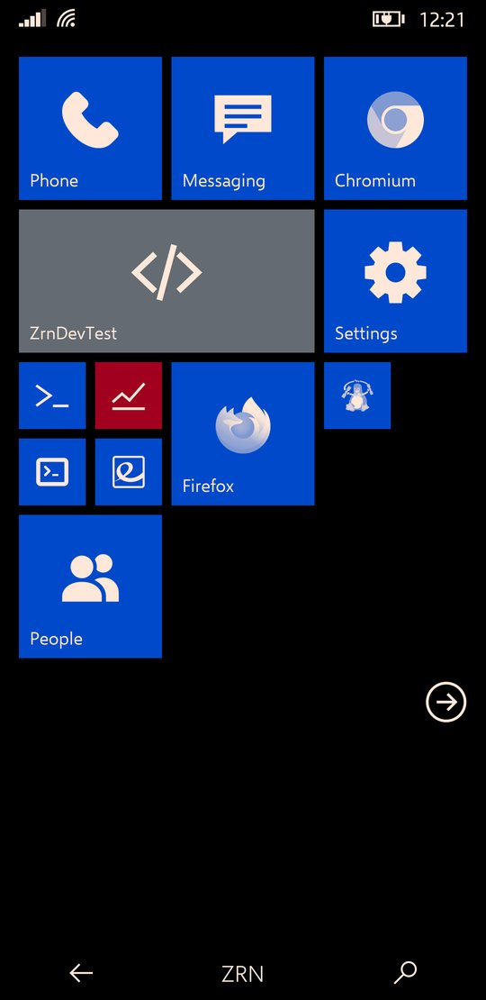
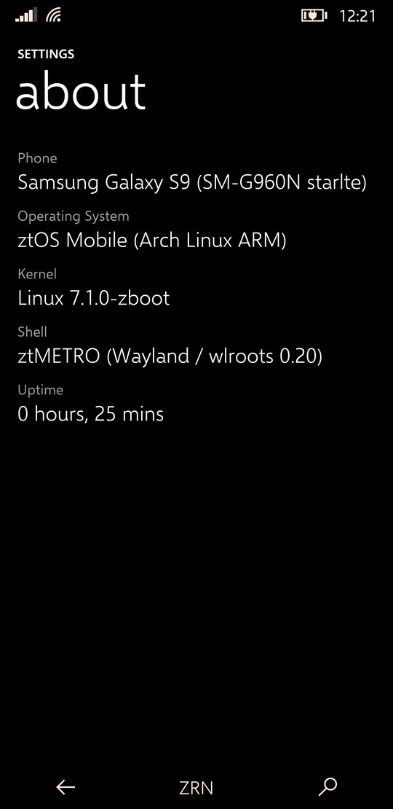

Zerone Laboratories / operating systems
ztOS
A phone operating system with Windows Phone 8.1's look and motion, on Arch Linux ARM and mainline Linux.
ztOS is the ztMETRO shell, its own apps, an updater and an SDK for apps in Python and Qt, on an ordinary Arch Linux ARM system. It runs on the phones in the device list, starting with the Samsung Galaxy S9, and in the QEMU emulator. Everything that moves is drawn by the GPU.
It is beta software. Since BETA-1 ztOS is a generic system image (GSI) plus a small layer per phone, the two meeting at ztOSIAL, its hardware interface layer. The S9 port runs a mainline 7.1 kernel with the phone's GPU, display, touch, Wi-Fi, 4G data, sound and sensors working. ztConflo, its image builder, is how it reaches other phones.
Screenshots
Taken from the live display of a Galaxy S9.




ztMETRO
The shell, and the only one installed.
ztMETRO is a Wayland compositor, built on wlroots, that is also the whole phone interface: Start with its live tiles, the app list and search, the action centre, the app switcher, the lock screen and the on-screen keyboard. Its look and motion are Windows Phone 8.1's, measured frame by frame against screen recordings of real Lumias.
It renders itself with OpenGL ES: every tile, bar and app surface is a textured quad with its own matrix, which is what lets tiles tilt under a finger and whole screens swing. Text is drawn once and kept as a texture, and frames are drawn only while something moves.
- Start and tiles
- Pin, move and resize tiles; the turnstile when an app opens and when you come back.
- Action centre
- Notifications, quick actions, brightness, and a media banner.
- Keyboard
- On-screen, lifting the app so the text box stays in sight.
- Animation speed
- One setting for the whole interface, shell and apps, 75% by default.
- Haptics
- Strength per kind of touch, set in Settings.
- Other apps
- Firefox, Chromium and any Linux app run as windows inside it.
Apps
What comes installed.
| App | What it does | Written with |
|---|---|---|
| Settings | Wi-Fi, cellular and SIM, haptics, quick actions, theme, developer options | ZrnMetroCore (C) |
| Phone, Messaging, People | Calls, SMS and contacts, in the same style | ZrnMetroCore (C) |
| ZrnDevTest | What the hardware reports: system, sensors live, the journal and kernel log | ZrnMetroCore (C) |
| Welcome | The first-start tour: Start, getting around, your apps, making apps | ztOS SDK (Python) |
| Updates | Shows available updates and installs them | ztOS SDK (Python) |
| Firefox, Chromium, terminal | Ordinary Linux apps, shown as windows | Arch packages |
The native apps share ZrnMetroCore, a small toolkit with the shell's own widgets, page turns, pivots and press tilt.
The SDK
Apps in Python and Qt that look and move like the built-in ones.
The ztOS SDK builds an app into a single file: a small C launcher with the app's Python code, pages, pictures and the ztos runtime zipped behind it. Pages, lists, pivots, entries, toggles, round buttons, app bars and dialogs all come from the runtime, with the toolkit's own numbers for every motion.
ztos-sdk new "Notes" # a new app, from the template ztos-sdk run # try it on the computer ztos-sdk deploy # build, install on the phone, open it ztos-sdk logs -f # what it prints, on the phone
Keeping it fast
- Motion on the GPU. While a page turns, a list scrolls or a button leans, a GPU layer over the app shows pictures of the pages as textured quads, drawn by a small C renderer. Widgets are rasterised once, not every frame.
- A warm runtime.
ztos-zygoteloads Qt for Python once and forks each app from itself, which saves about a second of CPU per launch. - Compiled code. Apps ship with their Python already compiled, so the phone never compiles it on start.
System services
ztOS's parts below the shell.
| Name | What it does |
|---|---|
| ztOSCoreSensorFramework | Starts and watches every piece of hardware support and reports what fails; runs the sensor hub and the sensors |
| ztOSCoreNetworking | The modem, calls, messages and mobile data, and joining Wi-Fi |
| ztOSCirrusAudio | Sound: the audio DSP and the Cirrus speaker amplifiers |
| zrnperfd | Power: dynamic boost from the efficiency cores up, and core power-down |
| ztos-iald | ztOSIAL: serves the phone's hardware to the rest of ztOS over D-Bus, the same on every phone |
| Waydroid | Android apps, in a stripped-down Android 13 fetched and set up on first boot |
| ztos-update | The updater: a daily check, a notification, and the Updates app |
GSI and ztOSIAL
How ztOS is put together since BETA-1.
ztOS is built as one generic system image (GSI) for every aarch64 phone: the shell, the apps, the services and Waydroid, with no kernel, no user and nothing specific to a phone. Each phone adds a device layer: its kernel, firmware, drivers, and a manifest saying how its hardware is reached. The two meet at ztOSIAL, a set of D-Bus interfaces (org.ztos.ial) served by ztos-iald.
- Interfaces
- 13: device, power, performance, display, sleep, sensors, haptics, lights, modem, call audio, audio devices, acceleration and Android.
- Backends
- Each interface is served by a generic backend (enough on a phone with full mainline support), the generic one with parameters, a Python backend in the device layer, or a separate service.
- Device layer
/vendor/ztos/manifest.tomland what it names. Porting a phone means writing this, not changing ztOS.- Kernel contract
- The GSI lists the kernel options it needs; ztConflo checks a phone's kernel against it before building.
- Checking a port
ztos-ial statusandztos-ial teston the phone show what works.
| Repository | What it holds |
|---|---|
| ztos-core | ztMETRO, the apps, the SDK, Android support and the system files in the GSI |
| ztos-ial | The interfaces, ztos-iald, the command line and the C and Python clients; the porting guide |
| ztos-build | The installer: ztos build --target gsi builds the GSI |
| ztos-device-samsung-starlte | The Galaxy S9's device layer, and the example for new ones |
| ztos-devices | ztConflo's registry of phones |
| ztOS | Everything in one tree, as before the split |
Installing
In the emulator, on a listed phone, or on another phone.
Everything starts from the ztOS repository on a Linux computer (x86-64 or ARM) with about 15 GB free and an internet connection. The build downloads Arch Linux ARM and about 2 GB of packages, runs ARM programs through qemu-user, and takes 30 to 60 minutes. It never needs sudo: it runs in a user namespace, so your account needs a range in /etc/subuid and /etc/subgid, which most distributions add.
# on Arch Linux; other distributions have the same tools sudo pacman -S --needed util-linux libarchive dosfstools mtools e2fsprogs \ qemu-user-static qemu-user-static-binfmt qemu-system-aarch64 edk2-aarch64 android-tools git clone https://github.com/Zerone-Laboratories/ztOS.git cd ztOS installer/ztos doctor # is this computer ready?
In the emulator
The quickest way to try ztOS, with nothing to flash.
installer/ztos install --target qemu --mode build-install
It asks for a user name, a password, the phone's name and your time zone, builds ztOS into build/ztos/qemu/, then opens it in a phone-shaped window. The mouse is your finger, Escape is the back button, and ssh -p 2222 <user>@localhost gets a shell. installer/ztos emulator starts it again later. The emulator has no modem, sensors or battery, so those parts of ztOS stay off.
On a listed phone
Every phone in the device list has its own installation steps, what works on it and its known quirks. Open its entry and follow them. Installing on a phone erases it.
The installer's modes, for every target:
| Mode | What it does |
|---|---|
| --mode build-install | Builds the image on this computer with your user and password, then installs it |
| --mode build-store | Builds the image and keeps it under build/ztos/ to install later |
| --mode download | Installs a prebuilt image from the GitHub release (user zerone, password toor). No BETA-1 release is published yet, so build it for now. |
installer/ztos with no arguments asks for each choice in turn.
On another phone
ztOS is a generic system image (GSI) plus a device layer for each phone (see GSI and ztOSIAL). For a phone postmarketOS already boots on mainline Linux, ztConflo builds an image from the GSI with a device layer generated for it:
installer/ztos build --target gsi # build/ztos/gsi/ztos-gsi-0.2.0-aarch64.tar.zst
ztconflo build <codename> --gsi build/ztos/gsi/ztos-gsi-0.2.0-aarch64.tar.zst
Then ztos-ial status and ztos-ial test on the phone show what works, and the ztOSIAL porting guide shows how to fix what doesn't. When it runs, add it to the device list so others can install it too.
Device list
Phones ztOS runs on, ported and kept up by their maintainers.
Each entry has the phone's specifications, how to install ztOS on it, and what works, in the style of postmarketOS's device pages. Ported a phone? Add it: moderators check every entry before it appears here.
Loading the device list…
ztConflo: other phones
How ztOS leaves the S9.
ztConflo takes a phone's codename and builds a flashable ztOS image for it: Arch Linux ARM with ztMETRO, on a kernel and boot setup that postmarketOS already boots. Given the GSI (--gsi), it adds a device layer generated for the phone and checks the phone's kernel against the GSI's kernel contract. It looks in the ztOS device registry first and falls back to postmarketOS for phones nobody has ported ztOS to yet. It never ports new hardware.
- Eligible phones
- 135 today, with a mainline aarch64 kernel; 71 of them archived by postmarketOS, and flagged.
- GPU check
- Phones without a Mesa GPU driver still build, with a warning that ztMETRO won't start.
- Registry
- One TOML file per phone; a phone moves from untested to boots to tested through a hardware checklist.
- Interface
- A command line and a terminal UI in ztOS's own look, which installs its tools on first run.
Status and next
Where ztOS is today.
- The first phone besides the S9 booting a ztConflo build from the GSI.
- Calls, messages and sensors in the apps through ztOSIAL, rather than the S9's own services.
- The sound of calls, and receiving SMS.
- Suspend on the S9, for idle battery life closer to Android's.
- Native apps drawing with OpenGL ES the way the shell does, and a ztOS package repository for updates.
See also
- ztOS source, with the full status page and the SDK guide, and its parts: ztos-core, ztos-ial, ztos-build and ztos-device-samsung-starlte
- ztConflo, the image builder, and ztos-devices, its registry
- galaxy-s9plus-mainline-linux, the Exynos 9810 mainline drivers ztOS builds on
- postmarketOS, whose kernels ztConflo reuses
- Ometh Abeyrathne, who makes ztOS